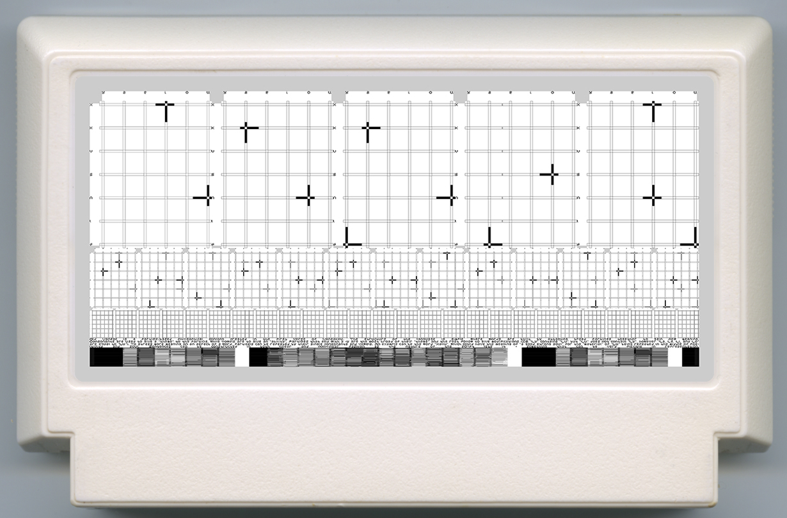

for this project, i am intending to make a website that functions as a fictional operating system based in a synthetic universe of my creation. the interface will consist of seemingly abstract symbols which relate to the language i have created for this universe along with the imagery attatched to it. here is an example of this script used in a design i created earlier this year.
what i expect people to take away from this "OS" is that of a similar experience i get online every day, that being the act of exploring the homepages of artists/developers/etc which haven't been updated in years, often only accessible through the wayback machine. by having this be an "OS" as opposed to a "homepage" lies in the amount of interaction that would be allowed through the site, and how much the site itself can be personalized to suggest different kinds of users.
this is something i have been meaning to do for as long as i have been an artist. the idea of an operating system as a place that reflects reality was always very fascinating to me.
this website will be made with just html and p5js in mind, with a minimalist approach to the ui but a maximalist and esoteric approach to the "applications".
return to pluslorem.wiki